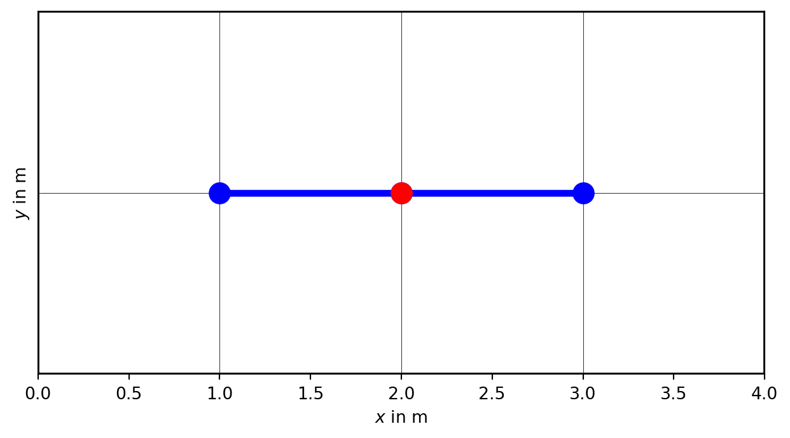
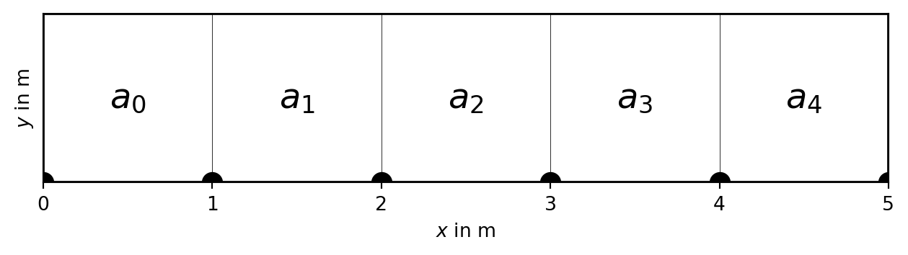
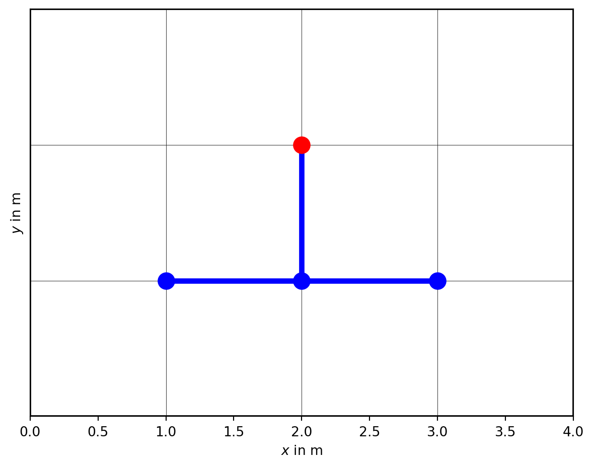
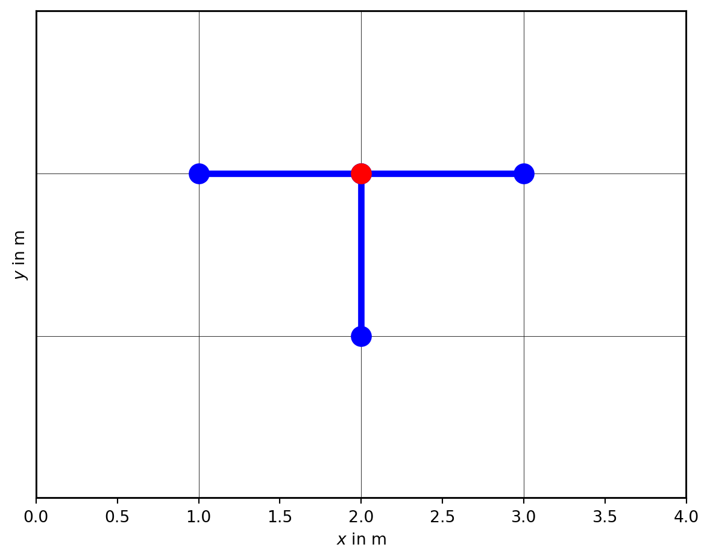
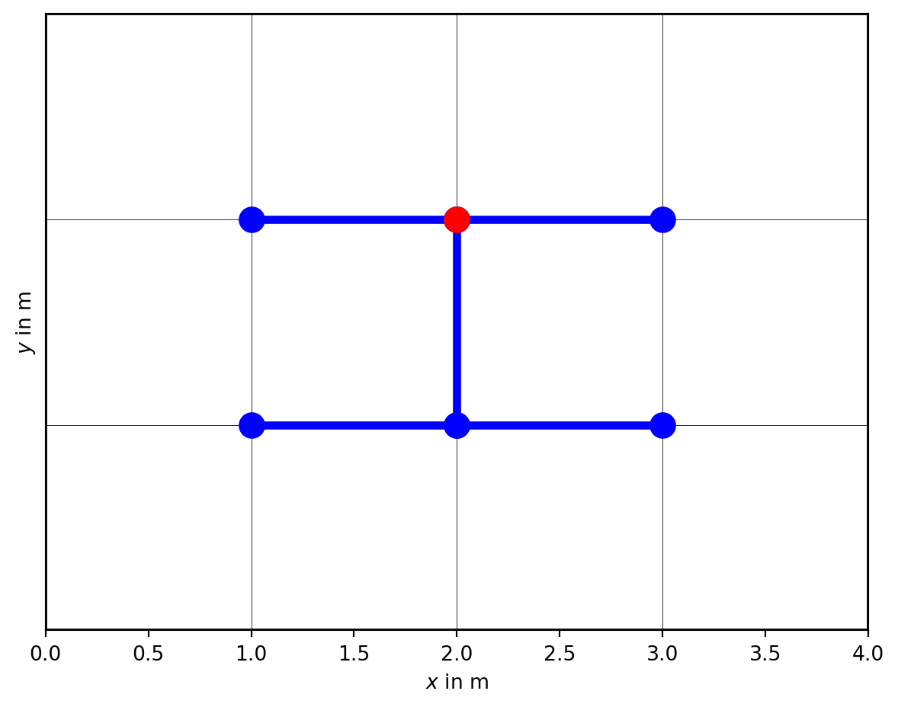

4 Numerical Simulation Methods in Geophysics, Part 3: FD Implementation
1. MGPY+MGIN, 3. MDRS+MGEX-CMG
5 Recap and exercise
5.1 Task: solve Poisson equation
\[\div(a\grad u)=f\]
(stationary) potential field, e.g., temperature, flux, current
simplest method: Finite differences
FD: Approximate derivative operators by differences using finite values \(u_i\) at points \(x_i\), e.g. a
5.2 Unit solution
2nd derivative \([+1, -2, +1]\) \(\Rightarrow\) \(\vb{A}\cdot\vb{u}=\vb{f}\) with the stiffness matrix
\[ \vb{A} = \begin{bmatrix} +1 & -2 & +1 & 0 & \ldots & & \\ 0 & +1 & -2 & +1 & 0 & \ldots & \\ \vdots & \vdots & \vdots & \ddots & \vdots & \\ \ldots & \ldots & 0 & +1 & -2 & +1 \end{bmatrix} \]
5.3 Finite difference stencil
compute each value (red) with the help of its neighbors (blue)
5.4 Dirichlet boundary conditions
\(u_B - 2 u_1 + u_3 = f_1\)
\[ \begin{bmatrix} -2 & +1 & 0 & \ldots & & \\ +1 & -2 & +1 & 0 & \ldots & \\ \vdots & \vdots & \ddots & \vdots & \\ \ldots & 0 & +1 & -2 & +1 \end{bmatrix} \cdot\vb{u} = \begin{bmatrix} f_1 - u_B\\ f_2 \\ \vdots \\ f_N \end{bmatrix} \]
no change in coefficients, \(u_B\) on rhs act as outer source
5.5 Neumann boundary conditions
\[u_0 - 2 u_1+u_2 = f_1 \qquad u_1 - u_0 = g_B \Rightarrow u_2-u_1=f_1+g_B \]
\[ \begin{bmatrix} -1 & +1 & 0 & \ldots & & \\ +1 & -2 & +1 & 0 & \ldots & \\ \vdots & \vdots & \ddots & \vdots & \\ \ldots & 0 & +1 & -2 & +1 \end{bmatrix} \cdot\vb{u} = \begin{bmatrix} f_1 + g_B\\ f_2 \\ \vdots \\ f_N \end{bmatrix} \]
change in self-coupling, \(g_B\) on rhs adds to source
5.6 Tasks
- Create a stiffness matrix for unit quantities
- Implement Dirichlet BC on one and Neumann on other side
- Solve system for different right-hand sides:
- no source at all
- single source in the middle or at the boundary
- several sources with different strengths (& signs)
- source on part of the domain
- Alwas plot the solution and itsLaplacian
5.7 The general case
\(\Delta x \ne 1\) & \(a \ne 1\)
\(a \pdv{u}{x}\)

5.8 Tasks
- Derive the coefficiencs for the general case
- Write a function implementing the general case
- Divide the “subsurface” in regions with different \(a\)
- Compute the solution for different source fields
- Use a non-equidistant discretisation
- Always plot solution along with source and Laplacian
6 Parabolic PDEs
6.1 Heat transfer in 1D
\[ \pdv{T}{t} - a \pdv[2]{T}{z} = 0 \]
with the periodic boundary conditions: * \(T(z=0,t)=T_0 + \Delta T \sin \omega t\) (daily/yearly cycle) * \(\pdv{T}{z}(z=z_1) = 0\) (no change at depth) and the initial condition \(T(z, t=0)=\sin \pi z\) has the analytical solution \[ T(z, t) = \Delta T e^{-\pi^2 t} \sin \pi z \]
6.2 FD stencil

6.3 Explicit methods
\[ \pdv{T}{t} - a \pdv[2]{T}{z} = 0 \]
Finite-difference approximation
\[ \pdv{T}{t}^n \approx \frac{T^{n+1}-T^n}{\Delta t} = a \pdv[2]{T}{z} ^n \]
6.4 Explicit
Solve Poisson equation \(\div(a\grad u)=f\)
for every time step \(i\) (using FDM, FEM, FVM etc.)
Finite-difference step in time: update field by \[ T_{i+1} = T_i + a \pdv[2]{u}{z} \cdot \Delta t\]
6.5 Implicit methods
\[ \pdv{T}{t}^n \approx \frac{T^{n+1}-T^n}{\Delta t} = a \pdv[2]{T}{z} ^{n+1} \]

6.6 Mixed - Crank-Nicholson method
\[ \pdv{T}{t}^n \approx \frac{T^{n+1}-T^n}{\Delta t} = \frac12 a \pdv[2]{T}{z} ^n + \frac12 a \pdv[2]{T}{z} ^{n+1} \]
